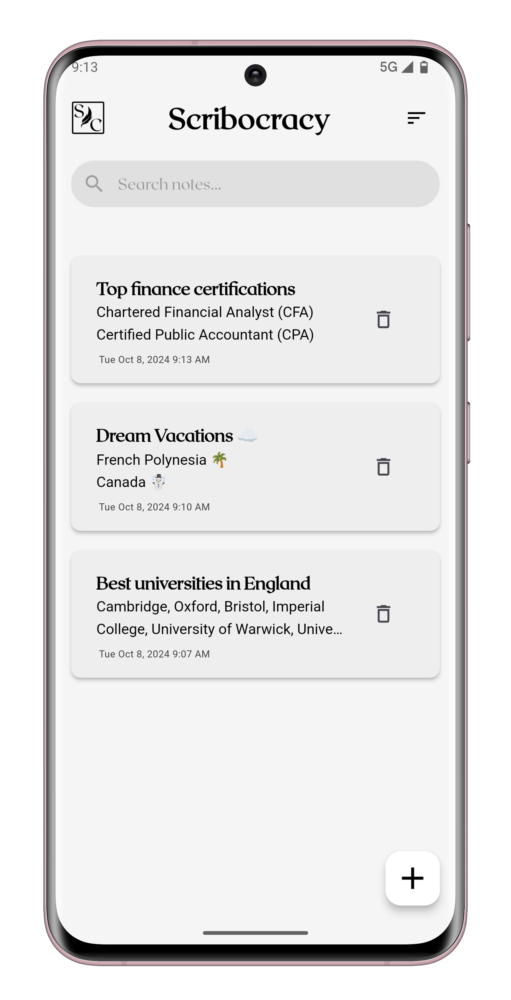
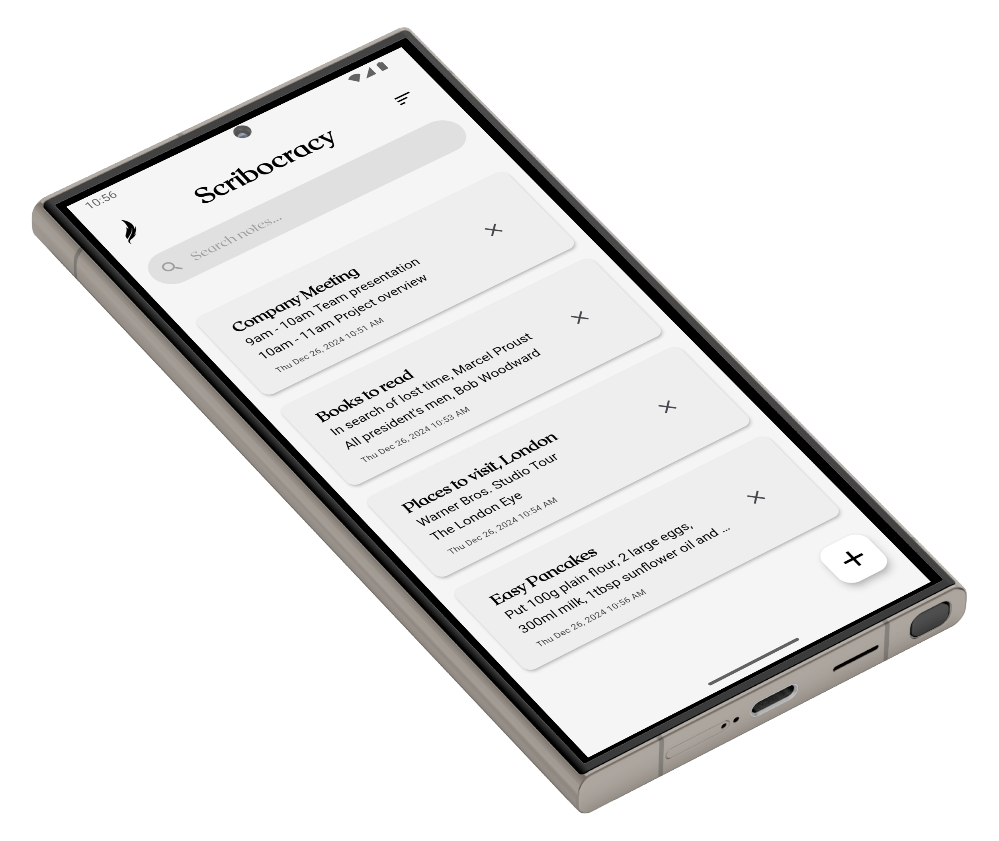
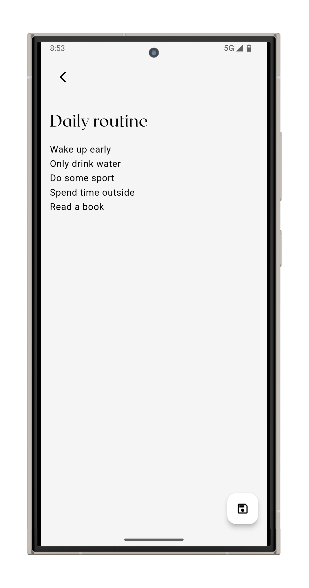
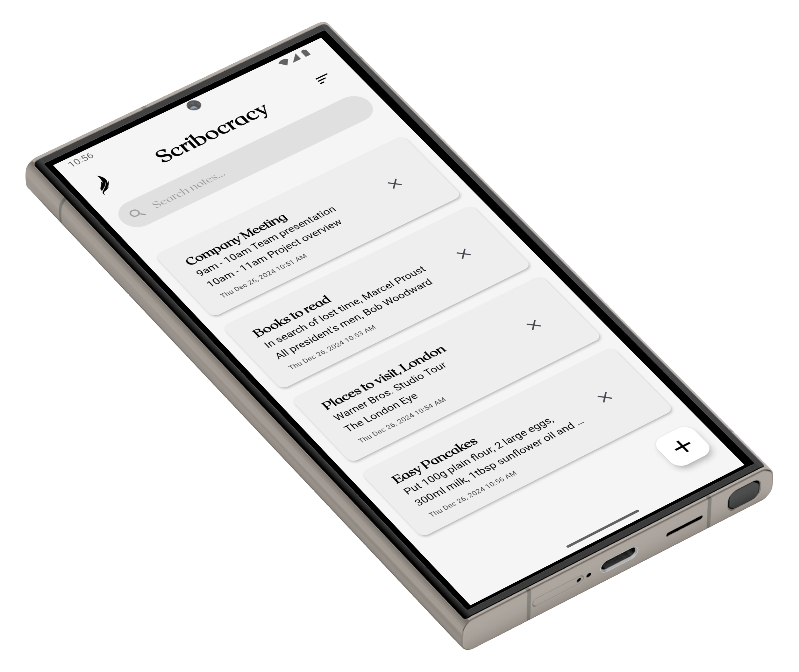
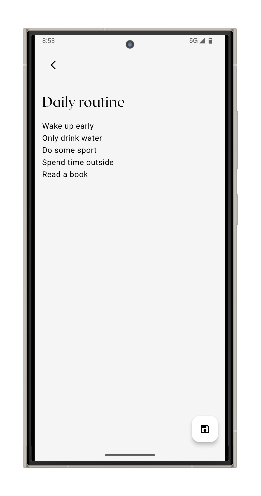
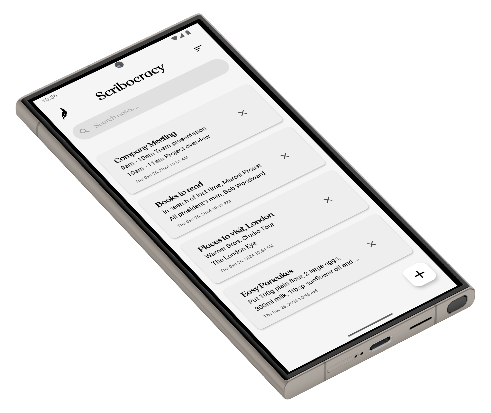
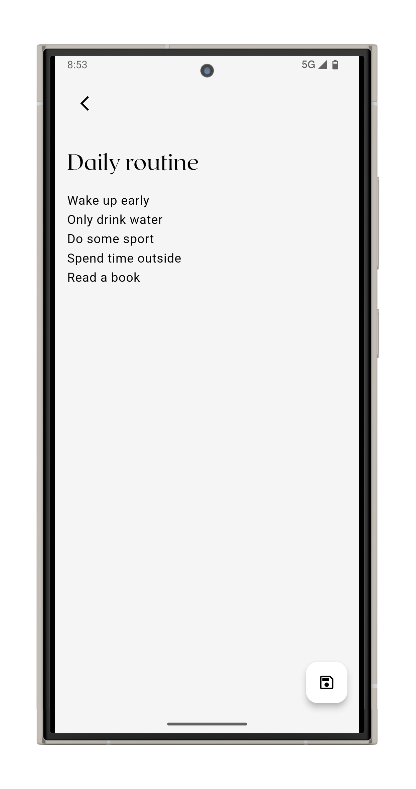

Gallery
 



Key features of the app
Mobile
Developed for all screen types, Scribocracy adapts perfectly to your mobile. Its simplicity delivers rare performance for a fluid experience.
Passion
Made with passion and thought for users, Scribocracy offers essential tools that are enjoyable and easy to use.
Design
Scribocracy's streamlined interface offers all the simple functions of a note-taking application. The style is inspired of 19th-century London newspapers.
Support
The Scribocracy team is working on future updates to make your experience even more enjoyable. Have your say by writing to us!
Scribocracy provides users with the fundamental capabilities expected from a traditional note-taking application. The primary functions include the ability to create new notes, save them, and edit existing ones. These straightforward features contribute significantly to the application’s impressive loading times, which are notably fast, ensuring that users can access their notes without unnecessary delays.
The design philosophy behind Scribocracy emphasizes a minimalist aesthetic, which not only enhances visual appeal but also promotes ease of use. The user-friendly interface is a significant advantage, allowing users to focus on their note-taking tasks without being overwhelmed by complex features or cluttered layouts.
Those who run the compagny
Founder & CEO Scribocracy
An open-minded passionate about emerging technologies and future industries, adaptive team player and contributor to leading innovative projects.
Administrative Director
A passionate computer science enthusiast, dedicated to innovative programming and constantly pushing the boundaries of technology.

